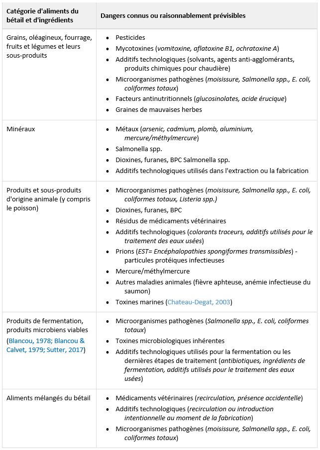

Chapitre 5 Dangers préoccupants courants selon la catégorie d’ingrédients et d’aliments
« Les métaux lourds, les dioxines, les furanes, les BPC, les résidus de médicaments vétérinaires, les résidus de pesticides, les additifs technologiques, les mycotoxines et les contaminants microbiens » sont parmi les contaminants préoccupants les plus courants.
Il est proposé d’exiger au minimum que les dangers indiqués au tableau 5.1 suivant, et considérés comme des dangers connus ou raisonnablement prévisibles dans les aliments du bétail et les ingrédients connexes, soient pris en considération dans le processus d’identification et d’évaluation des risques.
Ce tableau est une liste non exhaustive des dangers selon la catégorie d’aliments du bétail et d’ingrédients, et doit être utilisé en fonction des procédés de fabrication de chacun.
Tableau 5.1 Dangers préoccupants courants selon la catégorie d’aliments et d’ingrédients
